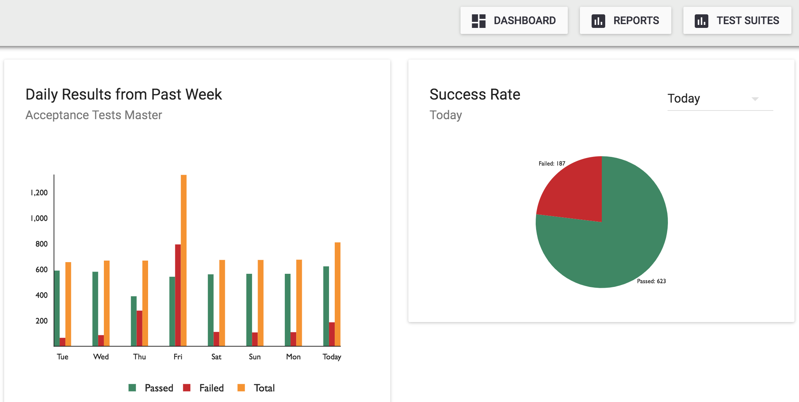
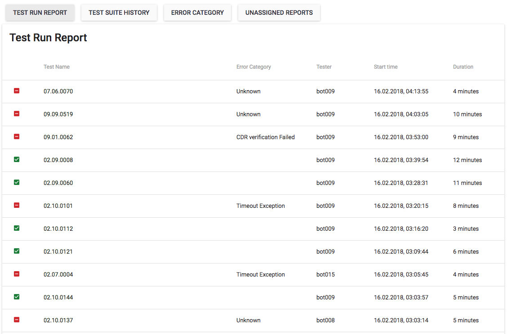
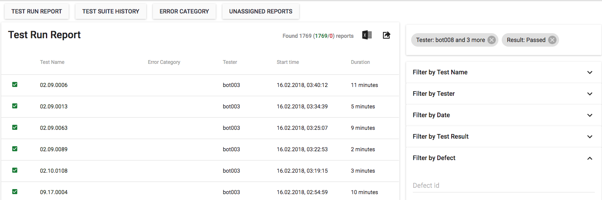
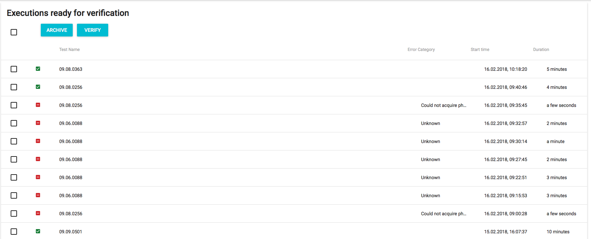

Transparent Project Reporting with QiTASC ConQlude
QiTASC ConQlude (pronounced “Glass”) is an interface that is used for managing post-execution processes after test cases have been run. For example, approval, uploading and exporting INTACT test report data. It is also used for defect management and can be integrated with many external test management systems. The main benefits of ConQlude are:
- Its transparent display of different types of test suite execution data
- Its ease of use and brief learning curve
- Its ability to reduce time spent on administrative tasks and other (previously) manual activities.
ConQlude is simple to navigate and its components are self-explanatory and straightforward, which allows for its efficient incorporation into project management workflows. Because the information found in reports is grouped logically and contains terminology/content familiar to INTACT users, ConQlude users find this interface quite easy to navigate and subsequently require very little training.
Prior to introducing ConQlude, users wrote custom automation scripts for each project to export reports into various tools. This required additional efforts when analyzing test cases that heavily depended on whichever tool the reports were exported to. With the introduction of ConQlude, the amount of time and effort required to go from test execution to result analysis has been shortened and simplified a lot, saving testers and managers hours of work per week.
What is ConQlude?
ConQlude is a web-based reporting tool developed by QiTASC that provides transparent, logically grouped, project-specific information about INTACT test suite execution. This information covers different critical areas including:
- Test cases, including the individual steps
- Characteristics associated with steps’ outcomes (i.e. events and conditions)
- Configurations
- Logs
- Attachments and metadata
- Errors & error management
Information is grouped per test case execution and is human readable, straightforward and simple to search or browse through. Because ConQlude was created with a strong focus on integration with external tools, it further enables:
- Customizable Excel data exports to CSV/XLSX format
- Integration with Project Management Systems (PMS) such as HP ALM
- Integration with code review & issue tracking systems
- Statistical analyses
In addition to ConQlude’ internal features, it also integrates data from INTACT test case results into different applications that serve unique purposes (e.g. statistical analysis programs, project management tools). When integrated into a PMS, reports are uploaded to ConQlude as soon as they’re executed on INTACT Server. Next, the reports are uploaded to the configured external PMS as soon as they’re approved. ConQlude uses the authentication details of the approver to upload the reports. Note that this uploading phase does not involve an automation account or similar, which is essential to comply with security policies in enterprise environments. Additionally, it is useful to see who is responsible for the specific test case when using the PMS, which these authentication details facilitate.
Using ConQlude
Depending on whether you are a test engineer, a test manager or administrator, you will use ConQlude and its information for different purposes.
After logging in and selecting a project, users will see the ConQlude Dashboard, which provides a quick overview of the project’s metrics. Clicking on the Reports button will take the user to ConQlude’ main Test Run Report section.

Test Managers and Administrators will have access to additional tabs to access additional sections:

Using ConQlude as a Test Engineer
The primary ConQlude use case for test engineers is examining test execution results. In some cases, test cases are examined to ensure that their results conform to requirements before verifying/approving the reports for upload. In other cases, results must be carefully scrutinized as part of troubleshooting. Note that test managers and administrators may also use this functionality.
Whether verifying a test suite execution or troubleshooting a complex problem, test engineers will typically start from the Test Run Report page and then access one or more relevant reports.
Selecting the Reports tab from the Dashboard brings up the Test Run Report view, which contains sorted list of all test suite executions from that project’s duration.

Users may filter for test results:

Clicking on a test execution’s name brings up its detailed report, which is comprised of several sections:
- Categorical, project-related fields such as the test name, defect IDs, the tester, and approval/verification status.
- The test case outline, including all of its steps, their outcomes and those steps’ associated metadata in various formats (e.g., XML, MP3, PNG, PCAP).
- Metadata attachments are explicitly indicated by icons, e.g. indicates audio.
- Clicking on the icons previews the attachments.
- Clicking on line numbers shows the steps’ start times.
- Test case logs
Additionally, icons at the top of the report provide quick access to the report’s data, its status and integration with external tools:
Using ConQlude as a Test Manager
Test Managers have access to an additional Configuration tab where they can:
- Set test categories
- Manage configurations with certain external tools (e.g. HP ALM, YouTrack)
- Create data export defaults

Test managers often need to verify and approve test case executions before incorporating those results into project management systems (PMS). ConQlude has simplified this workflow by providing a Verification + Approval + Upload workflow:
- A tester reviews their test run reports in ConQlude by clicking
Verifyon all test cases that meet the requirements for the PMS. - Verified test reports are available to the test manager under an
Approvalstab. This significantly reduces the amount of reports that they must sort through. From this tab, the test manager confirms the Verified report. If the report is as expected, the manager then clicksApprove. - An approved report is then flagged as ready for export to the PMS.
All Configuration sections take only a few minutes to complete. When configuring ConQlude to communicate with external tools, the configuration fields have been defined so that customers using those tools (e.g. HPQC, YouTrack) will easily recognize them and know what type of values should be entered.
Using ConQlude as an Administrator
Administrators have access to an additional Administration tab where they can:
- Manage error categories
- Manage project settings
- Manage users and user permissions
- Configure external tools with ConQlude
Although the administration features are quite simple to use, in some support may be required from QiTASC’s IT specialists during ConQlude setup.
Conclusion
ConQlude was intended to be as transparent as possible – both in terms of the test case results it provides and the easy-to-use features that let you access the data in different ways. Like all other products created by QiTASC, our own employees use ConQlude: Not just because we want to have the same experiences as our customers, but because we are confident that it’s the best tool to solve certain data management challenges that arise with large automated testing projects.
Since ConQlude’ introduction, our test engineers have seen a huge reduction in the amount of administrative work they need to do throughout the day in terms of tracking progress and transferring information about their day-to-day testing activities. The user-friendliness of ConQlude, along with the organization and categorization of test result data, makes it fast to learn and easy to use.
Test managers and administrators each only need to spend a small amount of time setting project-specific configurations, including integration with external tools. ConQlude integrates well with many other interfaces such as HP ALM, Atlassian JIRA and JetBrains YouTrack. When developing ConQlude, we placed a strong emphasis on integration and ensured that standard formats were used to provide flexibility with other environments.
Are you interested in seeing more of ConQlude’ features? Contact us at office@qitasc.com or check out the ConQlude Manual to learn more about its functionality.